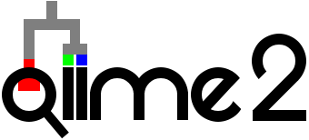

Tutorials
¶
“Moving Pictures” tutorial
Sample metadata
Obtaining and importing raw data
Demultiplexing sequences
Sequence quality control
Generate a tree for phylogenetic diversity analyses
Alpha and beta diversity analysis
Taxonomic analysis
Differential abundance analysis
Fecal microbiota transplant (FMT) study: an exercise
Prepare for the analysis
Sequence quality control
Merging denoised sequence variant data
Diversity analysis
“88 soils” tutorial
Prepare for the analysis
Sequence processing and diversity analyses
Importing data
Training feature classifiers with q2-feature-classifier
Obtaining and importing reference data sets
Extract reference reads
Train the classifier
Test the classifier
Importing sequence data
“EMP protocol” multiplexed fastq
Casava 1.8 single-end demultiplexed fastq
Filtering feature tables
Total-frequency-based filtering
Contingency-based filtering
Index-based filtering
Metadata-based filtering
Table Of Contents
Getting started
What is QIIME 2?
Core concepts
Installing QIIME 2
Tutorials
“Moving Pictures” tutorial
Fecal microbiota transplant (FMT) study: an exercise
“88 soils” tutorial
Importing data
Training feature classifiers with q2-feature-classifier
Importing sequence data
Filtering feature tables
Interfaces
Plugins
Semantic types
Community
Data resources
Supplementary resources
Glossary
Quick search